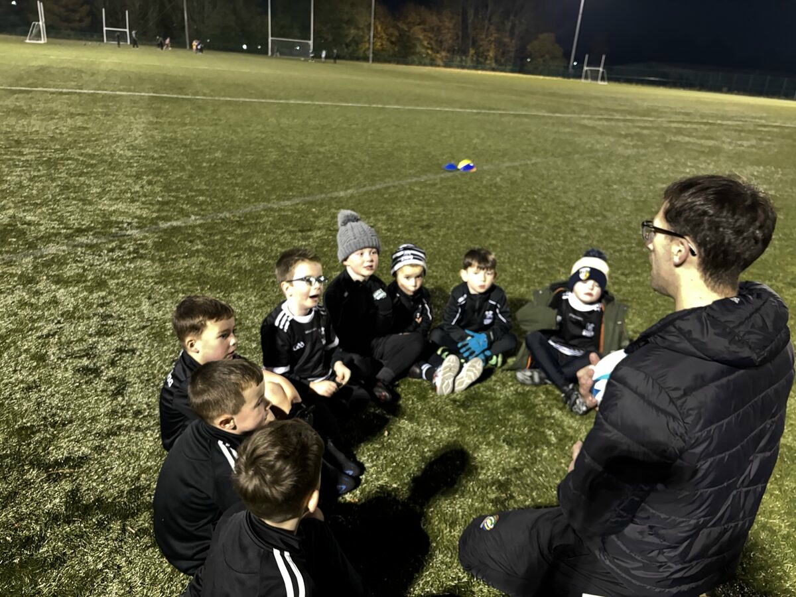

Our youngest Aggies enjoying one of their final Fundamentals and U6 sessions of 2026.
Fundamentals & U6 Finish for 2026
Fundamentals and U6 training has now finished for the year. We would like to thank every parent and guardian for the tremendous support you have given throughout 2026.
We hope the children enjoyed the welcoming environment created by our coaches, made new friends and had a brilliant first experience of Gaelic games. It has been wonderful watching them learn, develop and grow in confidence while becoming part of the Aggies family.
The Fundamentals and U6 Christmas Party and Presentation takes place this Friday, 20 November, at Roar and Explore from 6:00–7:30pm. We look forward to seeing all the children there for a fantastic evening of festive fun. 🎄🎅